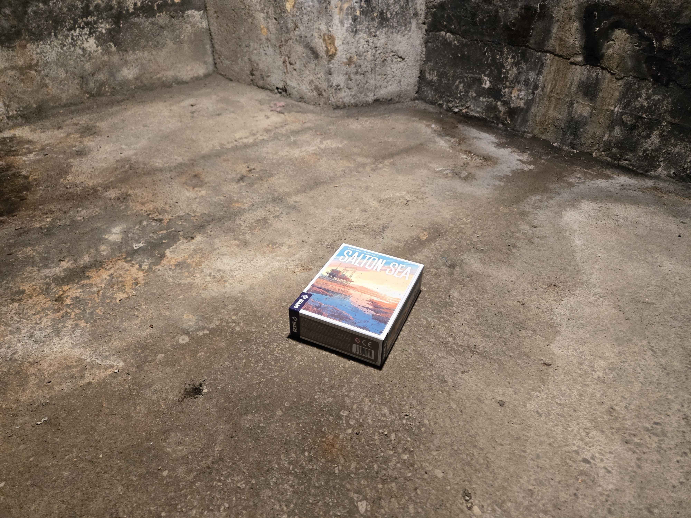
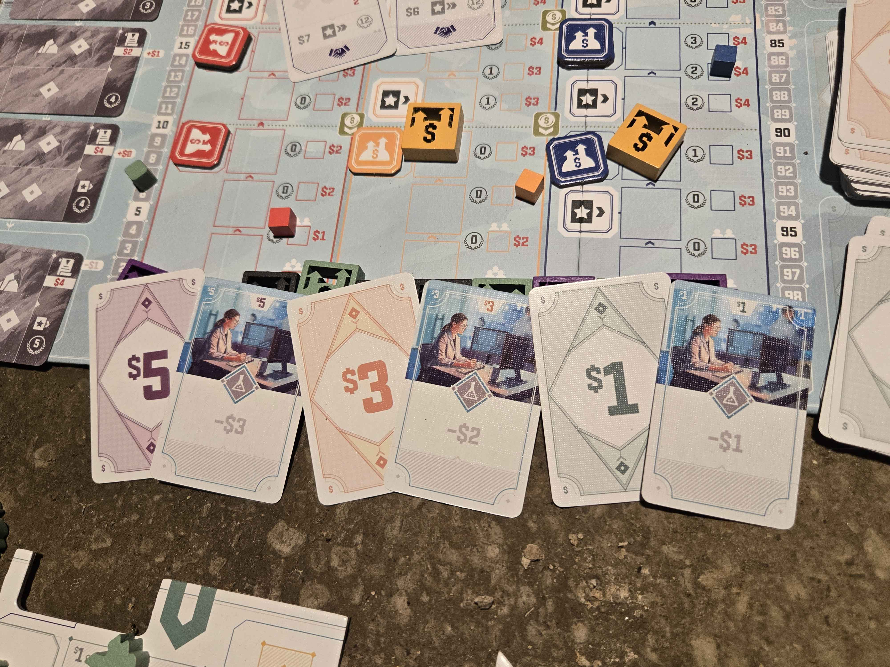
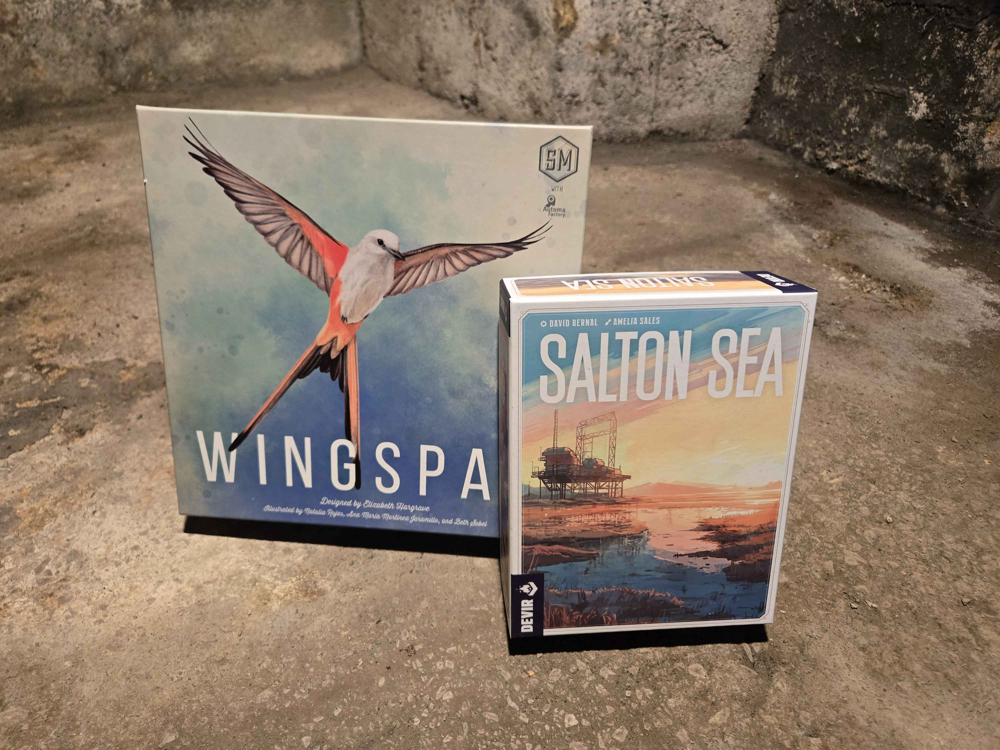
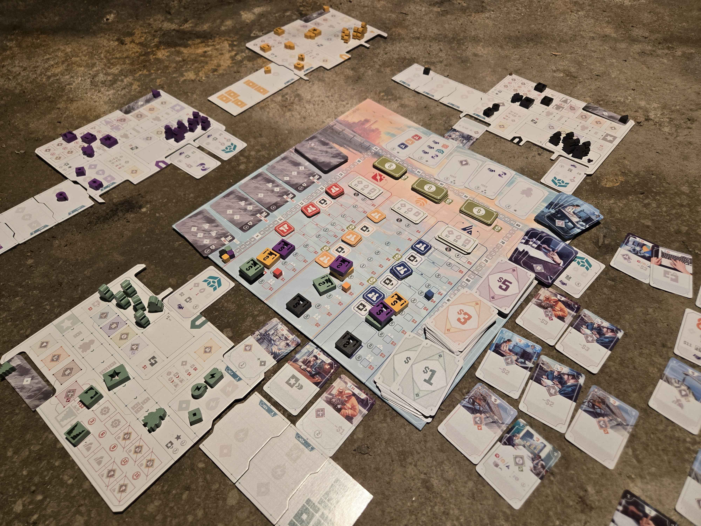
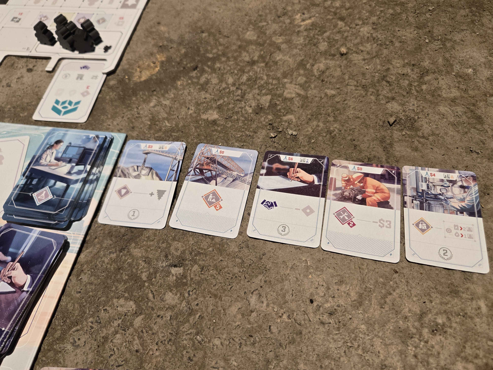
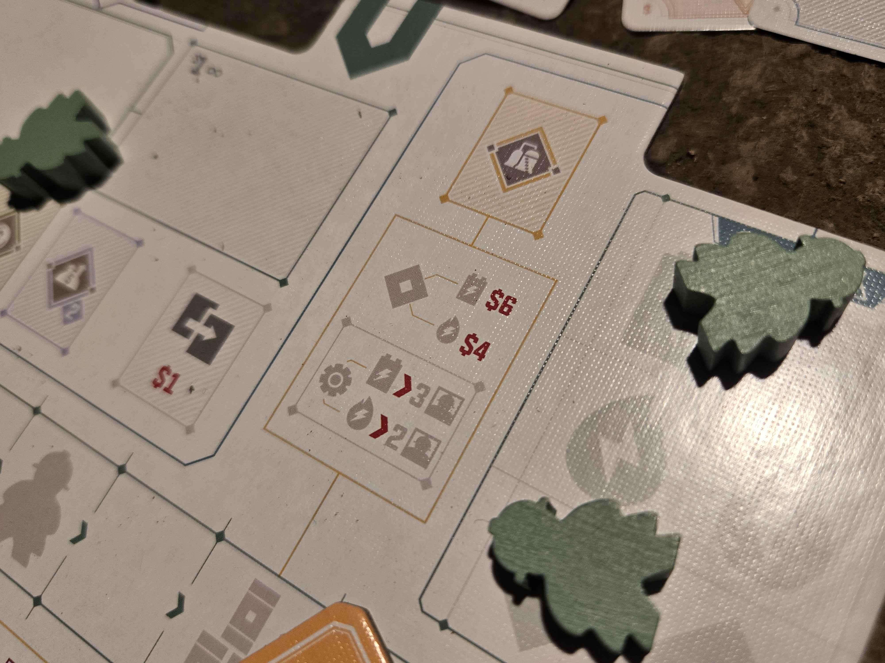
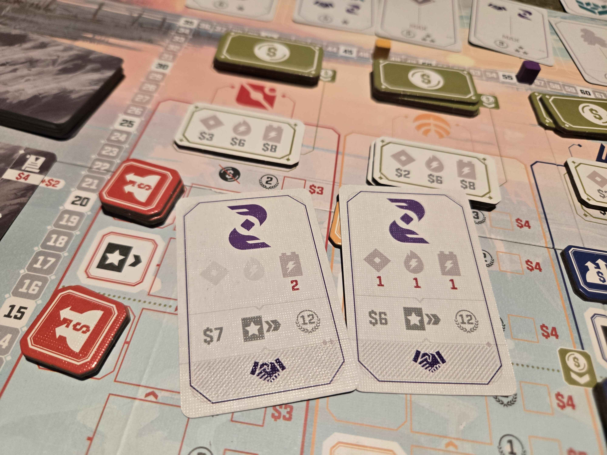
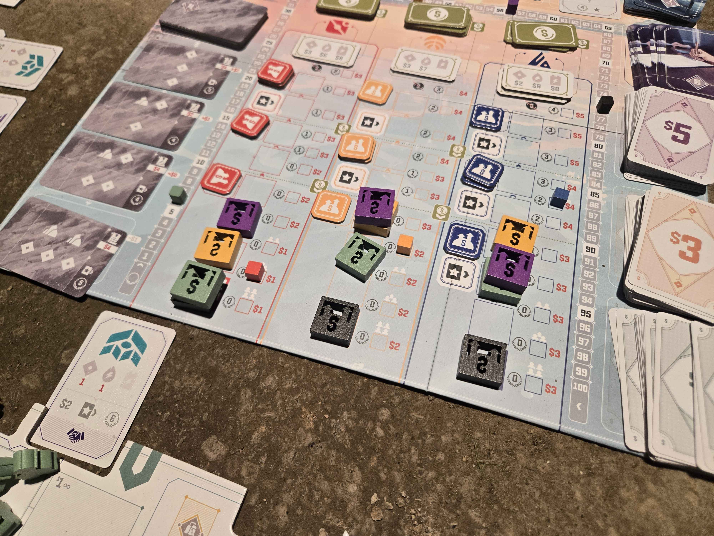

Where am I?
(10 min. read)
It’s dark here. I shift my weight and my back spasms in knots from lying on the hard concrete. My mouth is dry and cracked. I weakly croak.
“Hello?”
I sit silently in the dark, someone stirs next to me, and then another. There’s a group of us down here.
As we all stir awake a panic quitely ripples through the group. Where are we? What is this place? Is there a way out?
We are silenced by a spotlight flashing in the middle of the group. There's a board game box there? What is this. Then a voice speaks, it speaks just out of eyeshot. “Hello everyone.” It intones. Its voice is deep and painful. “The rules are simple. Every one of you will play. Only one of you can win this game. You do not want to lose this game.” We all look back down at the game.

Salton Sea is an economic euro game in the picturesque Salton Sea. Through it’s unique action selection mechanism players will amass resources and try to have the most victory points at the end of the game. Oh yeah, hold on to your butts for this exciting game. If you have anti-boredom medication take it now. (No but for real, this game is actually really unique)

Here’s the game’s core: the money cards on their back have special actions. This gives money two uses: to be spent or to be used for that action. And here’s the kicker: using the action does NOT discard the card. This means you can just keep taking that action as long as you don't spend the money. You really don't want to spend your money in this game because of how good holding onto it for actions is.

Having money on hand feels better than spending it. It’s a very pleasant mechanic. And look at that pleasant box, cool blues and warm oranges as the sun sets on this scenic lake. It reminds me of Wingspan: that’s nice. And the box is nice and small. It’s only half the size of a normal game box. You could easily carry this thing around in a backpack. This must be a nice pleasant experience.

Don’t be fooled. This game does not have your best interests at heart. It is here to make you suffer. Remember that central mechanic where holding onto money feels good? Well this game’s trick is constantly assaulting you to get you to spend the money anyway. This game will give you money, and then immediately make you spend it. It gives only so it can have the sick satisfaction of taking it away. Spending money hurts so bad because of your lost efficiency. No other game makes you hate spending money more than this one. This game was crafted by Belial and his sixfold legions of hell with a six-times-six goetic invocation. This game will override your self-preservation instincts. It will get you to carve flesh out of your very body. The Halls of Hell have started to march against you, your time is at an end.

The main pressure you'll feel playing this game is getting you to spend that money. One way this is done is by having powerful research cards come out of the deck every turn. And these are either powerful one shot abilities, or really strong upgrades that can really get to you to snowball if gotten early enough. They have a simple temptation; “take me as early as you can, the earlier the better.” BUT NOT TOO EARLY. If you bankrupt yourself you’ll never recover. So through this game you always have that devil on your shoulder tempting to you to ruin your game.
And of course this is all on the public market. So your opponents also all have a devil telling them the same thing. Better swipe it up before they do! Better watch your step though.

The Prince of Hell wouldn’t be satisfied if only research was expensive. Everything in this game is expenvie, even the many basic action. These massive prices make your hand of money a ferris wheel of cards. At the same rate you’re getting new cards, the old ones are also being ripped away from you. As every card leaves your hand you’ll feel that stinging sensation like tape being ripped off your skin.

This game offers an illusion of safety. It looks like you can just take this sell action and be set for life. The sell action gives you so much money. But the sell action doesn’t give you points or additional actions. Only contracts do that. And contacts suck. They are awful. They give you like no money back. Sure you get an extra action, but uou throw in $18 and get back like $6.
If you stay in that little kiddy pool taking sell actions you’ll feel safe, but you’ll never achieve greatness. You’ll only win this game if you take these awful contracts and stay poor forever. This game is about going right to the edge of disaster, but not falling in. And again, spending money is so painful every step you take to that edge is a ragged cut across your back.

The final trap of this game is back to the core of that infernal money. The game’s bank is not limitless. There’s a very small pool of money available every turn. If it all gets taken, you have to wait multiple turns for the bank to refresh. Frankly this is just cruel. You’ve spent all your money, and you are ready to sell everything and make it all back, and there are no $1 bills left. You can either lose the value and take what you can, or delay selling. These both feel really bad and stretch out the agony of being broke even longer.

Agony in Games
No game can be your favorite unless it hurts you. Pain deepens our attachment to the game and makes us feel everything more deeply. Imagine someone blocking you in Agricola. When you feel that stab of anger, the game now has its hooks in you. Now you’re invested. If you were only on auto-pilot before, but now it’s personal.
And few things are more painful in a game than an embarrassing loss. I imagine many deep relationships with games started walking home after a bad loss. You turn the game over and over in your mind, theory crafting and strategizing. A bad loss really motivates you to be better. The pain from the loss increases investment in the game. But here’s the trick with Salton Sea: it gets you to that place of pain, even if you’re not losing.
In Salton Sea every time you spend money and throw that action away, it sets you up to feel the hole it left in future turns. “Ah damn I wish I had that card I spent two turns ago.” Now in a perfect world, that play was probably optimal, but it feels bad. Even when you’re dominating a game, it’s still full of these painful choices that increase your investment in the game.
Salton Sea is a cruel game. It seems to take some satisfaction in your suffering. I don’t know where it came from, but it has to be a hellish place. This game really is great. Highly recommend.
Eventually it became obvious I was winning. Every other player’s mis-step left them further and further behind. Eventually my score passed 100 and went off the board. I never got a look at the taskmaster that put us here, but I could feel his wicked grin when he looked at me. A shiver passed down my spine.
When I clacked my final piece on the board to end the game every other player disappeared. I squinted but couldn’t see anything in the pitch black. I must have passed out at some point because the next thing I remember I was waking back up in a field miles away from my house. My shirt and pants were in tatters and I felt like I hadn’t eaten in days. I got to my feet and looked down. There is it. The game I won.
- May 21st 2022